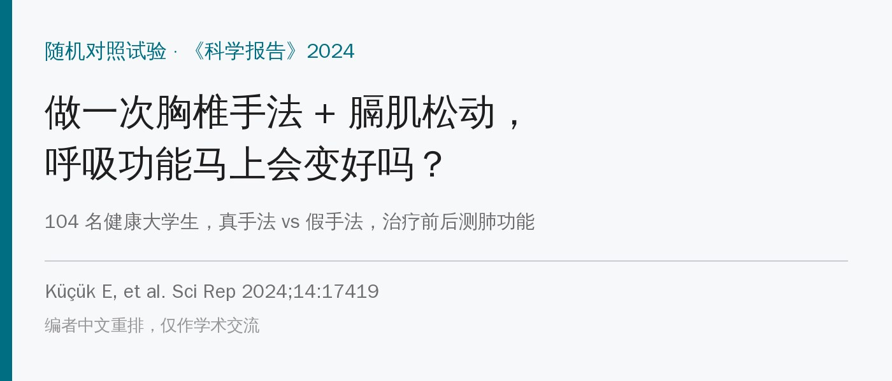
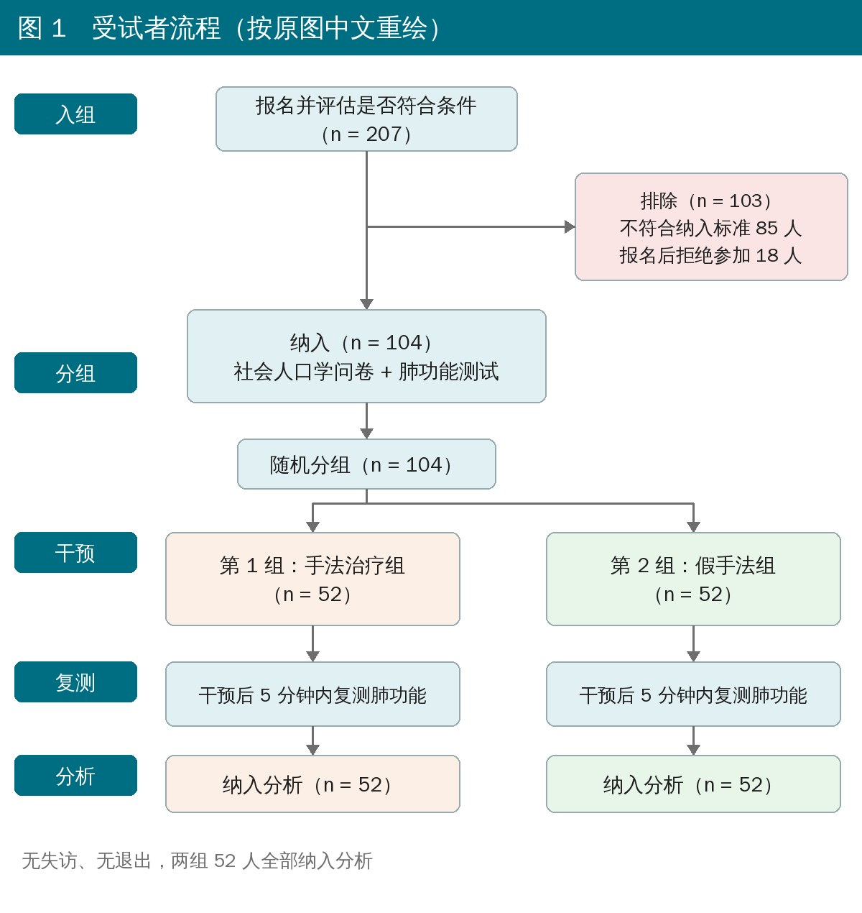
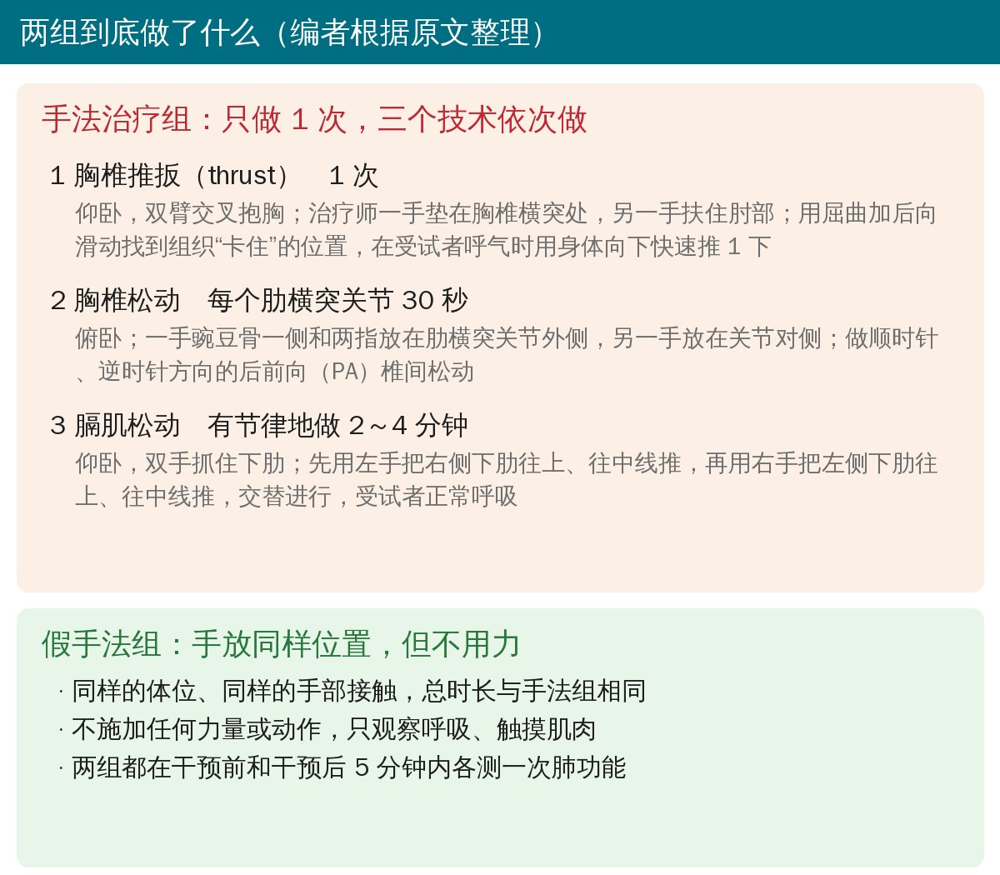
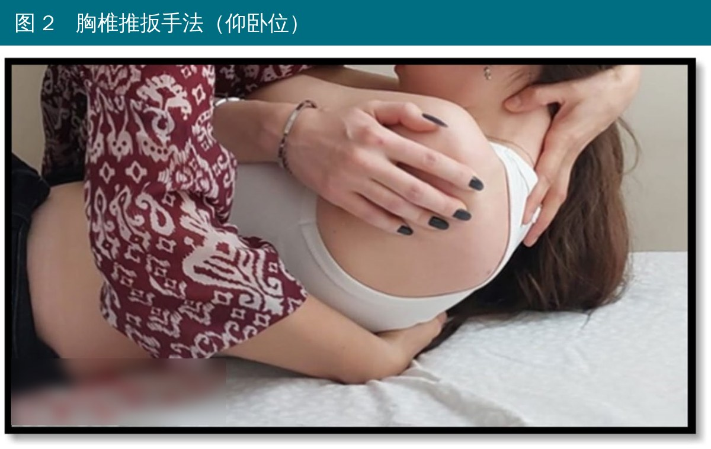
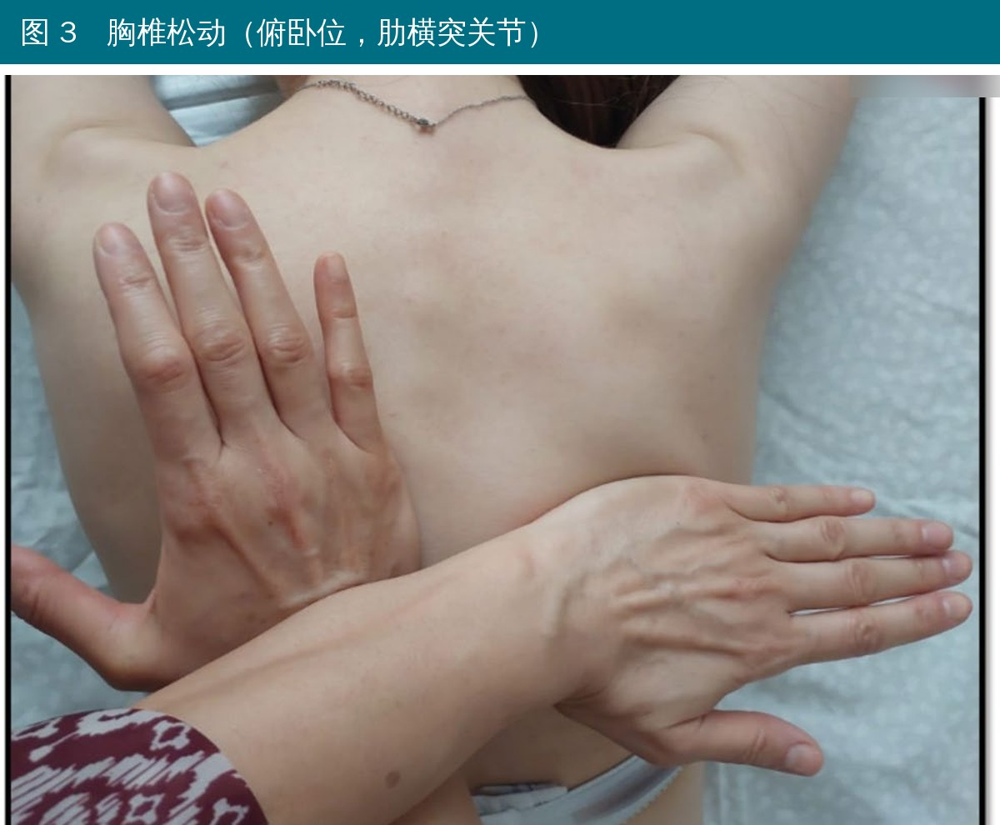
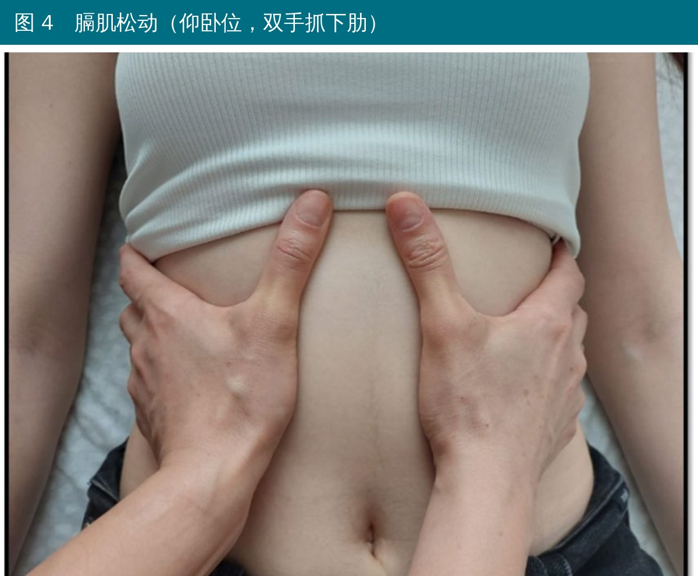
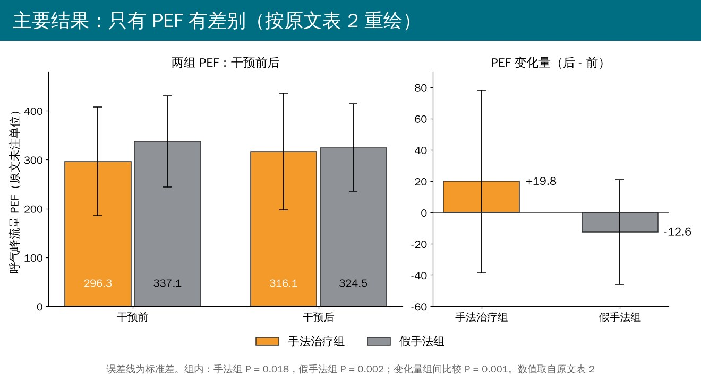

🔖原文信息（编者中文重排）
📚 文献信息
▪ Küçük E, Tozcu D, Topaktaş B, Coşkun G. Immediate effects of manual therapy on respiratory functions in healthy young individuals: a randomized controlled trial. Sci Rep. 2024;14:17419.
▪ 作者来自土耳其阿马西亚大学、哈切特佩大学
▪ 随机对照试验，已在 ClinicalTrials.gov 注册（NCT05934240）
胸廓要能“张得开”，肺才好充气。胸椎僵、肋骨活动差、呼吸肌绷得紧，胸壁就更硬，理论上会限制通气。所以不少治疗师会给 COPD、哮喘的患者做胸椎手法和膈肌松动，希望让胸廓更灵活、呼吸更顺。
那在健康人身上做呢？以往研究结论不一：有的说做完肺活量涨了，有的说什么都没变。这篇就想看看：给健康大学生做一次胸椎手法 + 膈肌松动，肺功能会不会马上变化。作者顺带还看了吸烟、得过新冠的学生做完有没有不同。
• 对象：阿马西亚大学健康学院 18～22 岁的学生，207 人报名，排除 103 人后纳入 104 人（女 87 人，平均 20.1 岁）
• 纳入：在读、没有需要吃药的慢性病、自愿参加；测试前 24 小时不喝酒
• 排除：骨科问题、心肺疾病、手法禁忌（如骨质疏松）、做过胸部/背部/腹部手术
• 随机分成手法治疗组和假手法组，各 52 人
• 只做 1 次，做之前和做完 5 分钟内各测一次肺功能（便携式肺功能仪，按美国胸科学会标准测 3 次取最合适的值）
• 指标：呼气峰流量（PEF）、第 1 秒用力呼气容积（FEV1）、用力肺活量（FVC）、一秒率（FEV1/FVC）
• 测肺功能的人和做统计的人不知道分组；做手法的治疗师知道

🔖原文图 1：受试者流程（编者中文重绘）

🔖两组方案一览（编者根据原文整理）
手法组一次做三个技术，都由同一位治疗师完成。

🔖原文图 2：胸椎推扳手法（床单印章文字已模糊处理）
• 体位：受试者仰卧，双臂交叉抱在胸前
• 治疗师一只手垫在背后，放在胸椎横突处；另一只手扶住受试者交叉的肘部
• 通过屈曲 + 向后滑动把要处理的节段“锁住”，找到组织屏障（感觉“卡住”的位置）
• 在受试者呼气时，治疗师用身体往下快速推 1 下，只做一次
这就是临床常说的仰卧位胸椎“扳一下”。原文没写针对的是哪一节胸椎，也没写是否听到弹响。

🔖原文图 3：胸椎松动，俯卧位，作用在肋横突关节
• 体位：受试者俯卧
• 治疗师一只手用豌豆骨一侧，加两根手指放在肋横突关节外侧；另一只手放在关节对侧
• 做顺时针和逆时针方向的后前向（PA）椎间松动
• 每个肋横突关节做 30 秒
肋横突关节是肋骨和胸椎横突相连的地方，直接关系到肋骨随呼吸的上抬。原文也没说做了哪几个节段、一共做了几个关节，所以总时长没法算。

🔖原文图 4：膈肌松动，仰卧位，双手抓住下肋
• 体位：受试者仰卧，正常呼吸
• 治疗师双手抓住两侧下肋（拇指在肋弓下缘）
• 先用左手把右侧下肋往上、往中线推，再用右手把左侧下肋往上、往中线推
• 左右交替、有节律地做 2～4 分钟
原文说膈肌松动包含“8 种不同的牵拉技术”，但只描述了上面这一种。
同样的体位、同样的手放在同样的位置，总时长和手法组一样，但不施加任何力量或动作，治疗师只是观察呼吸、触摸肌肉。所有人都没有出现不良反应，24 小时内也没人打电话报告不适。

🔖PEF 结果（编者按原文表 2 数值重绘）
• PEF：手法组 296.3 → 316.1（升 19.8，P = 0.018），假手法组 337.1 → 324.5（降 12.6，P = 0.002）；两组变化量相比 P = 0.001
• 干预前假手法组的 PEF 本来就比手法组高（P = 0.045），干预后两组没差别
• FVC、FEV1、FEV1/FVC：两组干预前后都没有显著变化，组间也没差别
• 亚组：手法组里吸烟的学生（15 人）PEF 从 330.3 升到 357.0（P = 0.039）；手法组没得过新冠的学生 FVC 从 3.5 升到 3.7（P = 0.041）
• 很可能是回归均值：手法组起点偏低、往上走；假手法组起点偏高、往下走，干预后两组几乎一样（316 vs 324）。这种“低的升、高的降、最后会合”的形态，本身就是回归均值的典型表现，不一定是手法的作用
• PEF 很吃力气：PEF 取决于受试者吹得多猛，受期望和配合度影响大。假手法只是把手放上去，受试者很可能猜得出自己是哪组，所谓“三盲”很难成立
• 变化量小：手法组只升了约 20，假手法组的 SD 都有 90～120，个体变化的 SD 也有 30～60，这点差距在 PEF 本身的测试波动范围附近
• 更稳定的 FVC、FEV1 都没变：反映肺容量和气道的“硬指标”没动，只是最容易受用力影响的 PEF 变了
• 两组基线不均衡：随机分组后男生 14 vs 3 人、得过新冠 12 vs 29 人，差得很明显，作者也没在分析里校正
• 亚组分析靠不住：吸烟、新冠亚组人数少，又只做了组内比较，多次检验也没校正
• 只做 1 次、只测 5 分钟内：说明不了持续效果，对象也是健康年轻人，不能直接推到 COPD、哮喘患者
• “三盲”和描述矛盾：标题写的是三盲试验，但原文自己说做手法的治疗师不设盲；同一段里又说治疗师“在试验开始前不知道分组”，前后打架
• 年龄标准差不可能这么大：纳入的是 18～22 岁，这个范围内标准差最大也就约 2.0，但对照组写 20.1 ± 2.6、全体写 20.1 ± 2.2
• 一秒率组间差距说反了：正文和表 3 都说干预后两组 FEV1/FVC 差距“变小”，但按表 2 算，干预前差 4.9（89.2 vs 84.3），干预后差 5.8（88.9 vs 83.1），其实是变大了
• BMI 分类少了 3 个人：对照组 BMI 分类 7 + 35 + 7 + 0 = 49 人，百分比也是按 49 算的，但对照组明明有 52 人；用 49 人算卡方正好得到原文的 P = 0.153
• 百分比算错：对照组不吸烟 38 人写成 72.1%，38/52 应为 73.1%
• 一秒率的标准差不合理：健康年轻人 FEV1/FVC 写成 89.2 ± 12.9，按这个分布会有相当一部分人超过 100%，而一秒率不可能大于 100%
• PEF 没写单位，数值也偏低：如果是 L/min，20 岁左右的健康人一般在 400 以上；而且手法组男生更多（27% vs 6%），PEF 反而更低，有点反常
• 样本量计算没头没尾：只给了 FEV1/FVC 的均值 0.84 和标准差 0.0713，没说预期差多少，算出每组 12 人；而且最后下结论用的是 PEF，不是 FEV1/FVC
• 吸烟亚组被拔高：讨论说吸烟者做完 PEF 的升幅“比不吸烟者更明显”，但结果里只做了吸烟者的组内比较，没有和不吸烟者比，也没给对照组吸烟者的数据
• 解释对两组都适用：作者把假手法组 PEF 下降部分归因于“从躺着到站起来的体位变化”，可手法组也一样要从床上起来
• 引用对不上：讲 MIP、MEP、脉冲振荡法的那句，引用的是《Maitland 脊柱手法》（参考文献 30）；讨论说 Nagy 等研究用的是膈肌松解，但该研究标题写明是膈肌松解联合吸气肌训练；表 3 里 “Vemuldap” 应为 Vemulpad
• 别指望做一次胸椎手法就能让肺功能“马上变好”：这篇真正能说的，只是 PEF 有个小幅变化，而且很可能有回归均值和用力程度的干扰
• 手法本身值得借鉴：仰卧胸椎推扳 + 俯卧肋横突关节 PA 松动 + 仰卧下肋交替上推这一套，对胸椎僵硬、肋骨活动差、觉得“吸不深”的人可以作为辅助手段，安全性也不错
• 如果想评估手法对呼吸的作用，PEF 不是好指标；胸廓扩张度、膈肌超声、MIP/MEP 等更直接
• COPD、哮喘这类患者的证据要看针对患者的研究，不能拿健康人的结果去套
表 1 两组社会人口学特征和健康行为
| 项目 | 手法组（n = 52） | 假手法组（n = 52） | P |
|---|---|---|---|
| 年龄（岁） | 20.3 ± 1.9 | 20.1 ± 2.6 | 0.132ᵃ |
| 身高（m） | 1.7 ± 0.1 | 1.7 ± 0.1 | 0.181ᵃ |
| 体重（kg） | 63.4 ± 13.8 | 58.9 ± 10.3 | 0.103ᵃ |
| BMI（kg/m²） | 22.7 ± 4.0 | 21.5 ± 3.0 | 0.280ᵃ |
| 性别 [n（%）] | 0.004ᵇ | ||
| 男 | 14（26.9） | 3（5.8） | |
| 女 | 38（73.1） | 49（94.2） | |
| BMI 分类 [n（%）] | 0.153ᵇ | ||
| 偏瘦 | 4（7.7） | 7（14.3） | |
| 正常 | 34（65.4） | 35（71.4） | |
| 超重 | 10（19.2） | 7（14.3） | |
| 肥胖 | 4（7.7） | 0（0.0） | |
| 吸烟 [n（%）] | 0.827ᵇ | ||
| 是 | 15（28.8） | 14（26.9） | |
| 否 | 37（71.2） | 38（72.1） | |
| 新冠 [n（%）] | 0.001ᵇ | ||
| 确诊过 | 12（23.1） | 29（55.8） | |
| 未确诊 | 40（76.9） | 23（44.2） |
计量资料为均值 ± 标准差。a：Mann-Whitney U 检验；b：卡方检验。新冠指经 PCR 确诊。表中数字照原文录入，原文的错误见上文。
表 2 两组肺功能测试结果
| 指标 / 组别 | 干预前 | 干预后 | 组内 P | 变化量 |
|---|---|---|---|---|
| PEF | ||||
| 手法组 | 296.3 ± 110.8 | 316.1 ± 119.1 | 0.018ᵉ | 19.8 ± 58.3 |
| 假手法组 | 337.1 ± 93.3 | 324.5 ± 89.2 | 0.002ᶠ | −12.6 ± 33.6 |
| 组间 P | 0.045ᶜ | 0.683ᶜ | 0.001ᶜ | |
| FVC | ||||
| 手法组 | 3.6 ± 0.7 | 3.7 ± 0.8 | 0.074ᶠ | 0.1 ± 0.6 |
| 假手法组 | 3.3 ± 0.8 | 3.5 ± 0.7 | 0.137ᶠ | 0.2 ± 0.9 |
| 组间 P | 0.106ᶜ | 0.539ᵈ | 0.290ᵈ | |
| FEV1 | ||||
| 手法组 | 2.9 ± 0.6 | 3.0 ± 0.6 | 0.735ᶠ | 0.1 ± 0.4 |
| 假手法组 | 2.9 ± 0.6 | 3.1 ± 0.6 | 0.235ᶠ | 0.2 ± 0.8 |
| 组间 P | 0.558ᶜ | 0.219ᵈ | 0.187ᶜ | |
| FEV1/FVC | ||||
| 手法组 | 84.3 ± 12.3 | 83.1 ± 13.3 | 0.506ᵉ | −1.2 ± 12.2 |
| 假手法组 | 89.2 ± 12.9 | 88.9 ± 12.3 | 0.569ᶠ | −0.3 ± 13.0 |
| 组间 P | 0.009ᵈ | 0.040ᵈ | 0.121ᵈ |
c：Student t 检验；d：Mann-Whitney U 检验；e：配对 t 检验；f：Wilcoxon 检验。变化量 = 干预后 − 干预前。原文未注明 PEF 单位，FVC、FEV1 单位应为 L，FEV1/FVC 为 %。
表 3 以往研究中手法对肺功能的短期和长期影响
| 研究 | 设计与样本 | 干预 | 测量 | 主要结果 |
|---|---|---|---|---|
| Jonely 等 | RCT；21 名 50 岁以上健康人，分 2 组 | 胸椎手法 vs 假肋间训练，各 3 次 | 肺功能（第 3 次干预后 7 天内）、胸围、人体活动量表 | 手法组第 3 次后一周内最大自主通气量显著改善；假手法组单次干预后呼气时胸廓活动度有显著差别 |
| Stępnik 等 | RCT；30 名 19～46 岁健康人，分 2 组 | 整骨手法（胸椎推扳、胸骨泵、膈肌牵伸）vs 咬肌软组织治疗（安慰） | 干预前后肺功能 | 手法组 PEF 显著改善（P = 0.001），FVC、FEV1 无显著变化 |
| Mustafaoğlu 等 | RCT；78 名 20 岁以上健康男性，分 2 组 | 单次胸椎手法 vs 假胸椎手法 | 干预前后肺功能、6 分钟步行、胸围、呼吸肌力量 | 两组胸围、肺功能、呼吸肌力量、6 分钟步行距离均无显著差别 |
| Wall 等 | RCT；21 名 19～35 岁健康人，分 2 组 | 单次两种手法：高速低幅推扳、低速关节松动 | 基线及干预后 1、10、20、30 分钟肺功能 | 干预后任何时间点肺功能均无显著变化 |
| Shin 和 Lee | RCT；30 名健康年轻人，分 2 组 | 胸椎手法 vs 假胸椎手法 | 干预前后肺功能 | 手法组 FVC、FEV1 显著增加，对照组无变化，组间差异显著 |
| Gonzalez 等 | RCT；80 名 20～50 岁健康成人，分 2 组 | 膈肌技术 vs 安慰干预 | 基线、干预后即刻、5 和 20 分钟肺功能，人体测量，最大呼吸压 | 膈肌牵伸显著改善最大呼吸压（P < 0.001）、FVC（P = 0.006）和 FEV1（P = 0.042）；安慰组无变化 |
| Lima 等 | 实验研究；100 名 17～30 岁健康成人 | 颈胸部泵式松动，每个技术 6 次 | 干预前后肺功能 | 男性 FVC、PEF、FEV1 增加，一秒率下降；女性 FVC、FEV1 增加，PEF 不变，一秒率下降 |
| Engel 和 Vemulpad | RCT；20 名健康人，分为对照组和 3 个干预组 | 单纯运动、单纯整脊手法、手法后运动；4 周 6 次 | 干预前后肺功能 | 单纯运动组 FVC、FEV1 显著下降；单纯手法组 FVC、FEV1 显著增加；手法 + 运动组手法后增加、运动后进一步增加 |
| 本研究 | RCT；104 名 18～22 岁健康年轻人，分 2 组 | 胸椎手法、松动 + 膈肌松动 vs 假手法 | 干预前后肺功能 | PEF 手法组升、假手法组降；FVC、FEV1、FEV1/FVC 组间无差别 |
表 3 按原文内容翻译、精简；原文将“Vemulpad”误拼为“Vemuldap”。
欢迎关注悦美力公众号，获取更多物理治疗的专业知识！
📄参考文献：
Küçük E, Tozcu D, Topaktaş B, Coşkun G. Immediate effects of manual therapy on respiratory functions in healthy young individuals: a randomized controlled trial. Sci Rep. 2024;14:17419. doi:10.1038/s41598-024-68654-7
原文以 CC BY-NC-ND 4.0 协议开放获取（仅限非商业使用、原则上不允许改编）。本文为学术交流用的中文解读，手法照片引自原文图 2～4（床单印章文字已模糊），流程图、PEF 结果图为编者按原文中文重绘，方案卡为编者整理绘制，附录表格为编者翻译整理，版权归原作者与期刊，如有侵权请联系删除。